classic

Atirgul buketi — 51 dona Narxi: 450 000 so'm 🌹 Siz uchun yangi guldasta Gullar: qizil · 51 dona Do'kon: Namuna gul do'koni Qizil atirgullar. Mehringizni gullar bilan yetkazing. Buyurtma uchun yozing #atirgul #buket
Original sinov guldastasi. Narx va teglar barcha uslublarda katalogga mos.
Atirgul buketi — 51 dona Narxi: 450 000 so'm 🌹 Siz uchun yangi guldasta Gullar: qizil · 51 dona Do'kon: Namuna gul do'koni Qizil atirgullar. Mehringizni gullar bilan yetkazing. Buyurtma uchun yozing #atirgul #buket
Atirgul buketi — 51 dona Narxi: 450 000 so'm qizil · 51 dona Qizil atirgullar. Mehringizni gullar bilan yetkazing. Namuna gul do'koni #atirgul #buket
Atirgul buketi — 51 dona Narxi: 450 000 so'm ✦ Nafis tanlov Qizil atirgullar. Mehringizni gullar bilan yetkazing. Tarkibi: qizil · 51 dona Go'zallikni hadya qiling Taqdim etadi: Namuna gul do'koni #atirgul #buket
Atirgul buketi — 51 dona Narxi: 450 000 so'm 🎉 Bayram kayfiyati! Bayram gullari: qizil · 51 dona Manzil: Namuna gul do'koni Qizil atirgullar. Mehringizni gullar bilan yetkazing. Quvonch ulashing #atirgul #buket
Atirgul buketi — 51 dona Narxi: 450 000 so'm 🌈 Bir quchoq tabassum Ichida: qizil · 51 dona Biz: Namuna gul do'koni Qizil atirgullar. Mehringizni gullar bilan yetkazing. Kimni xursand qilamiz? #atirgul #buket
Atirgul buketi — 51 dona Narxi: 450 000 so'm qizil · 51 dona Qizil atirgullar. Mehringizni gullar bilan yetkazing. Namuna gul do'koni 🌷 Bugungi tanlov Hoziroq yozing #atirgul #buket
Atirgul buketi — 51 dona Narxi: 450 000 so'm 🛍 Sizga munosib tanlov Guldasta: qizil · 51 dona Do'kon: Namuna gul do'koni Qizil atirgullar. Mehringizni gullar bilan yetkazing. Buyurtma bering #atirgul #buket
Atirgul buketi — 51 dona Narxi: 450 000 so'm 💕 Tuyg'ular gullarda Sevgi ranglari: qizil · 51 dona Gul manzili: Namuna gul do'koni Qizil atirgullar. Mehringizni gullar bilan yetkazing. Yaqiningizga atalgan #atirgul #buket
Atirgul buketi — 51 dona Narxi: 450 000 so'm ❧ Nafosat va uyg'unlik Qizil atirgullar. Mehringizni gullar bilan yetkazing. Gul tarkibi: qizil · 51 dona Mehr bilan tanlangan Taqdimot: Namuna gul do'koni #atirgul #buket
Atirgul buketi — 51 dona Narxi: 450 000 so'm 😊 Salom, gul ishqibozi! Bizning gullar: qizil · 51 dona Bizdan: Namuna gul do'koni Qizil atirgullar. Mehringizni gullar bilan yetkazing. Sizni kutamiz #atirgul #buket
Atirgul buketi — 51 dona Narxi: 450 000 so'm ◼ Yangi kayfiyat Kompozitsiya: qizil · 51 dona Studio: Namuna gul do'koni Qizil atirgullar. Mehringizni gullar bilan yetkazing. Tanlang. Yozing. Hadya qiling. #atirgul #buket
Atirgul buketi — 51 dona Narxi: 450 000 so'm ✓ Tarkib: qizil · 51 dona Qizil atirgullar. Mehringizni gullar bilan yetkazing. ✓ Do'kon: Namuna gul do'koni ✅ Guldasta ma'lumotlari ✓ Buyurtma: xabarda #atirgul #buket
Atirgul buketi — 51 dona Narxi: 450 000 so'm Tur va rang: qizil · 51 dona Qizil atirgullar. Mehringizni gullar bilan yetkazing. Sotuvchi: Namuna gul do'koni 📋 Gul katalogi Batafsil: bizga yozing #atirgul #buket
Atirgul buketi — 51 dona Narxi: 450 000 so'm 🎁 Mehringiz uchun sovg'a Sovg'a gullari: qizil · 51 dona Tayyorlagan: Namuna gul do'koni Qizil atirgullar. Mehringizni gullar bilan yetkazing. Esda qoladigan lahza #atirgul #buket
Atirgul buketi — 51 dona Narxi: 450 000 so'm ✨ Diqqat markazida Bugunning gullari: qizil · 51 dona Tanlov: Namuna gul do'koni Qizil atirgullar. Mehringizni gullar bilan yetkazing. Guldastani tanlang #atirgul #buket
Atirgul buketi — 51 dona Narxi: 450 000 so'm 🍃 Har yaproqda bir tilak Qizil atirgullar. Mehringizni gullar bilan yetkazing. Gul ohangi: qizil · 51 dona Mehr gullab yashnasin Gul maskani: Namuna gul do'koni #atirgul #buket
Atirgul buketi — 51 dona Narxi: 450 000 so'm ◆ Ranglar uyg'unligi ◇ Gullar: qizil · 51 dona ◇ Do'kon: Namuna gul do'koni Qizil atirgullar. Mehringizni gullar bilan yetkazing. ◆ Buyurtma uchun yozing #atirgul #buket
Atirgul buketi — 51 dona Narxi: 450 000 so'm 🌸 Mayin lahzalar Mayin gullar: qizil · 51 dona Gul do'koni: Namuna gul do'koni Qizil atirgullar. Mehringizni gullar bilan yetkazing. Iliq tuyg'ular hadyasi #atirgul #buket
Atirgul buketi — 51 dona Narxi: 450 000 so'm ● Oddiylikda go'zallik Tarkib: qizil · 51 dona Do'kon: Namuna gul do'koni Qizil atirgullar. Mehringizni gullar bilan yetkazing. Sizning tanlovingiz #atirgul #buket
Atirgul buketi — 51 dona Narxi: 450 000 so'm ✍ Mehr bilan yaratilgan Qizil atirgullar. Mehringizni gullar bilan yetkazing. Guldasta imzosi: qizil · 51 dona Gullar orqali ayting Muallif: Namuna gul do'koni #atirgul #buket
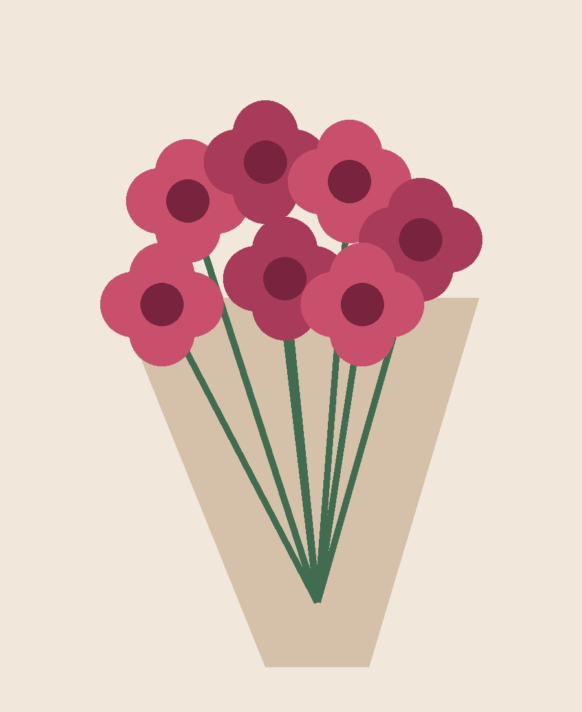
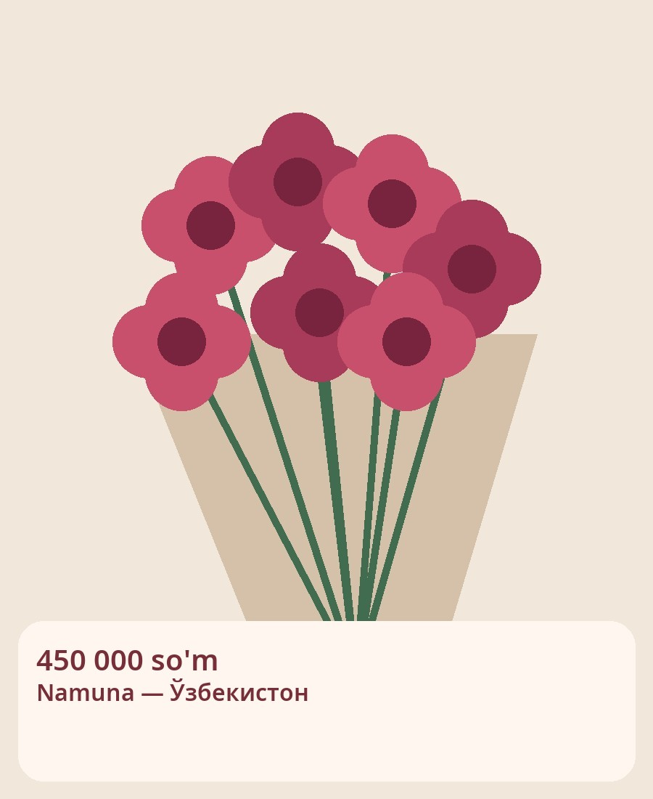
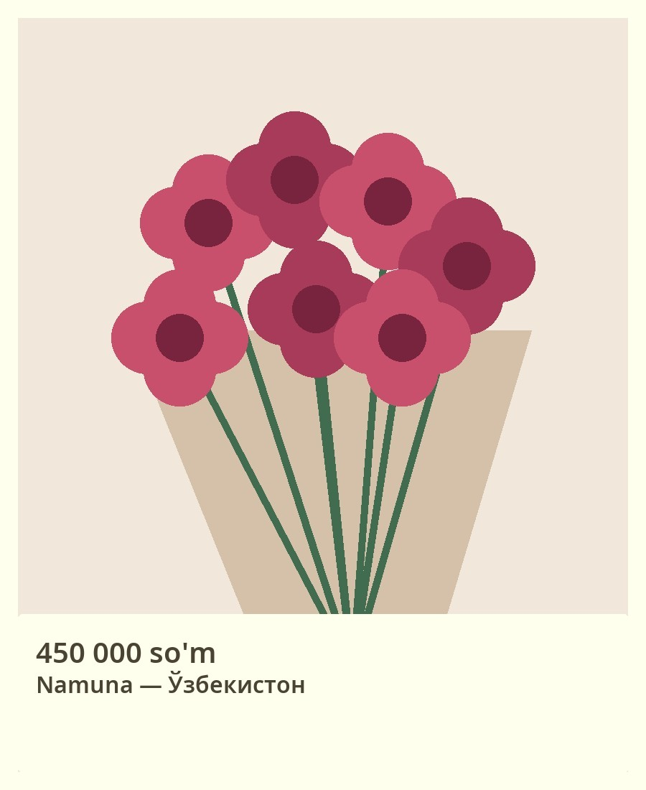
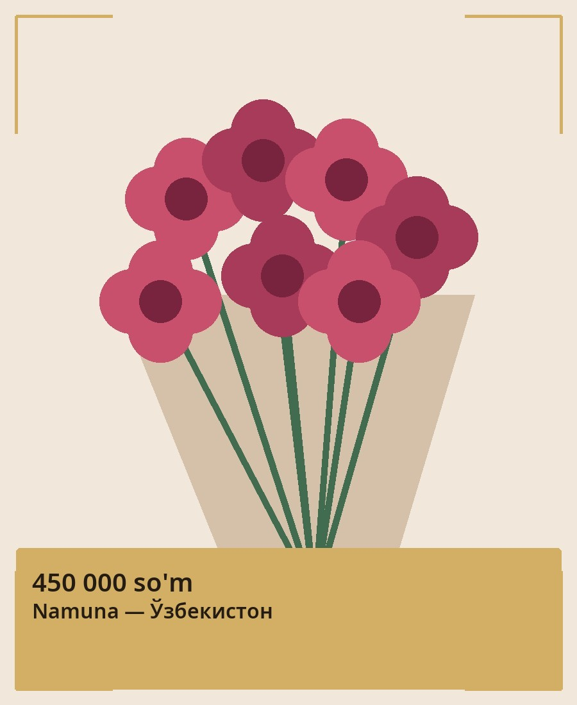
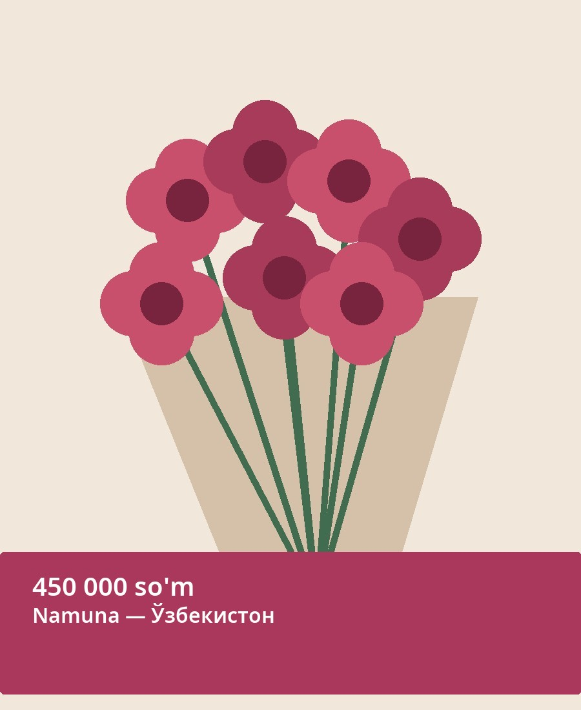
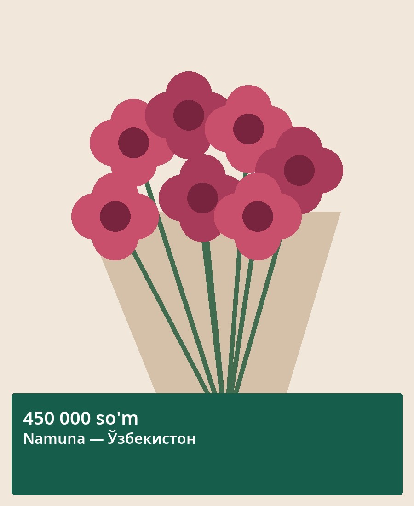
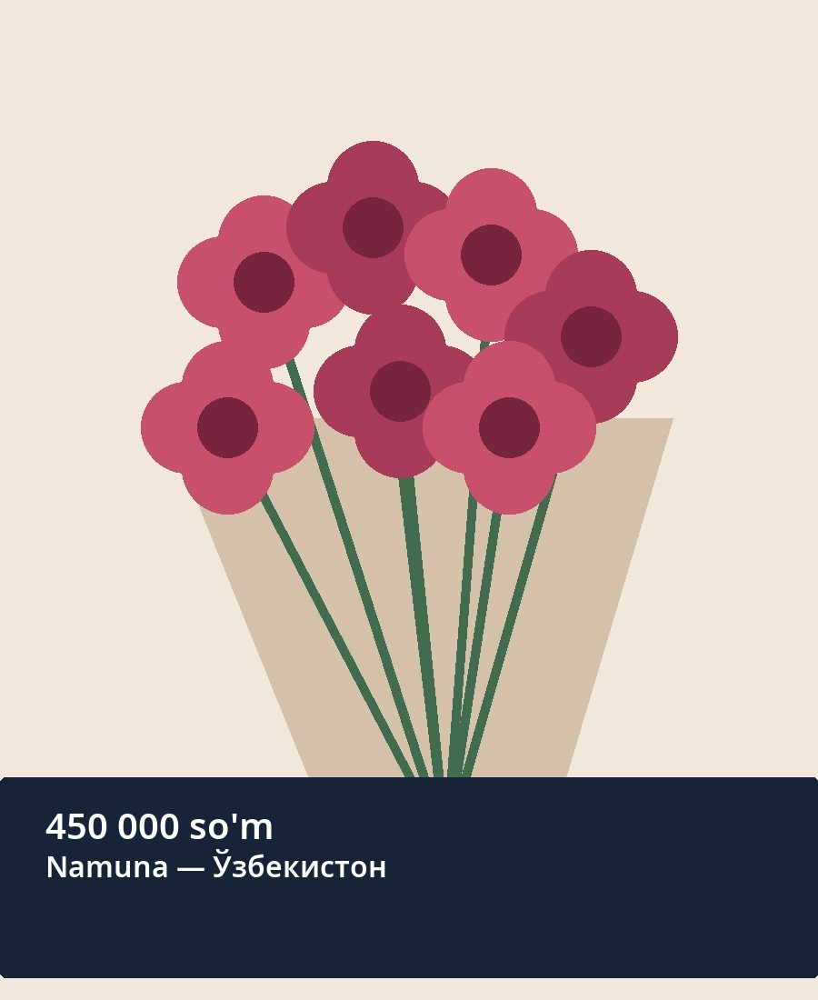
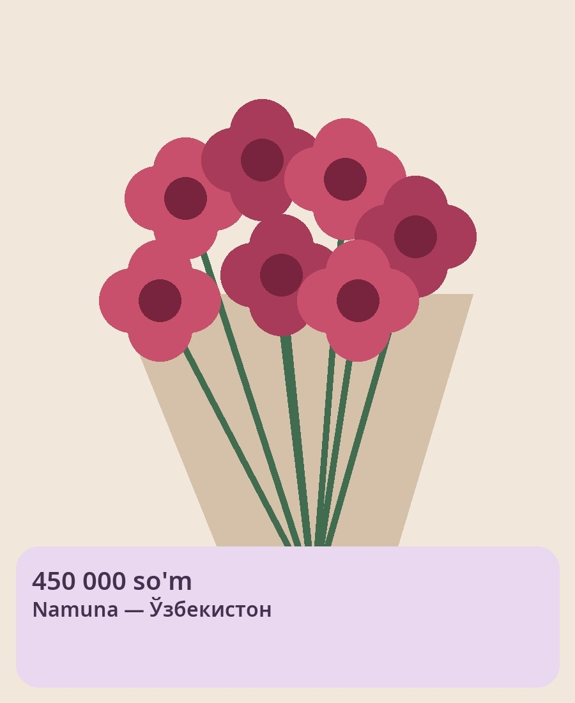
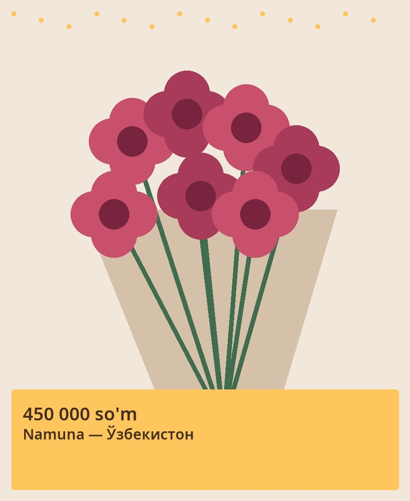
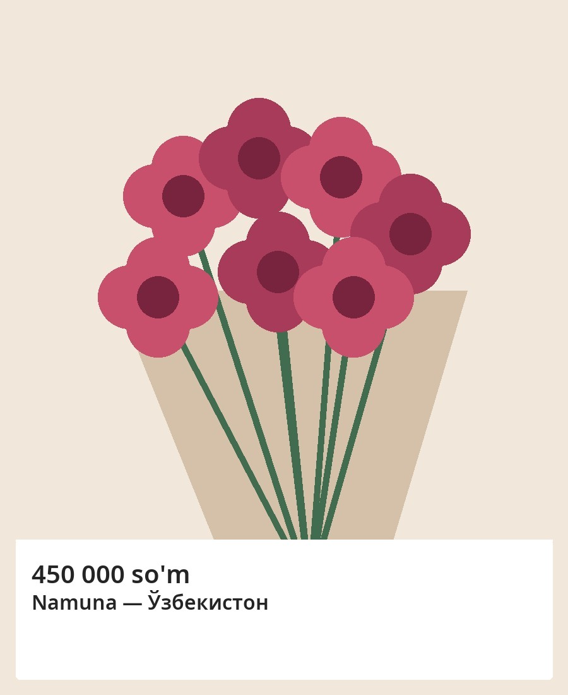
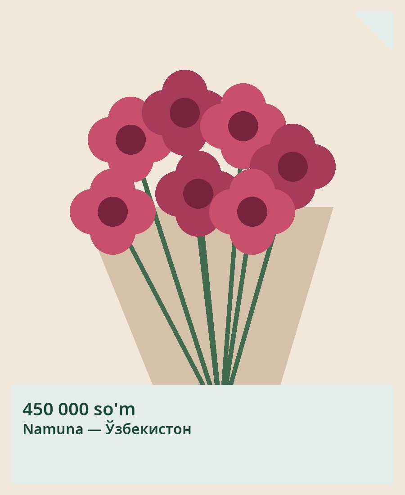